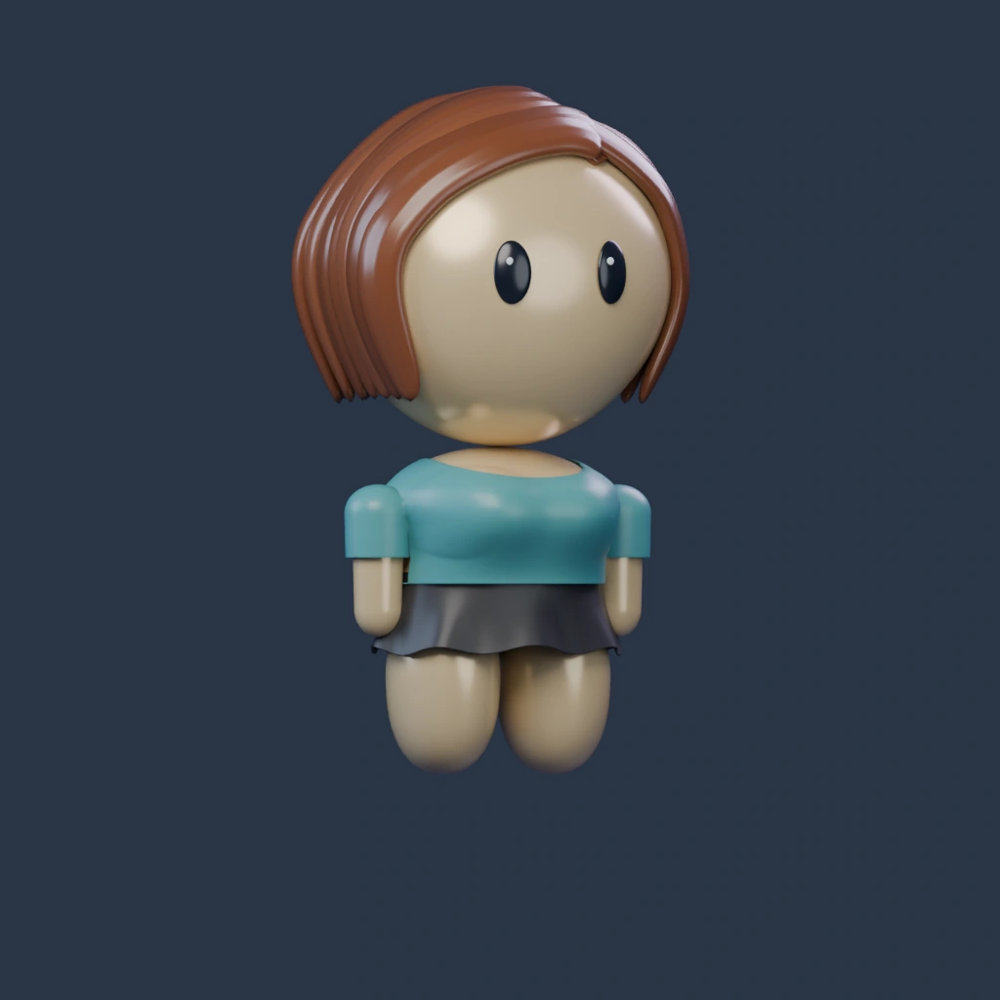
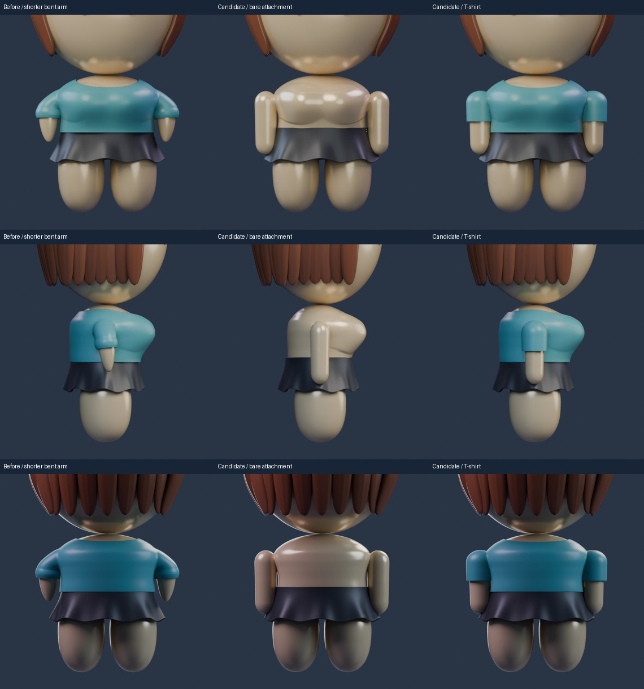
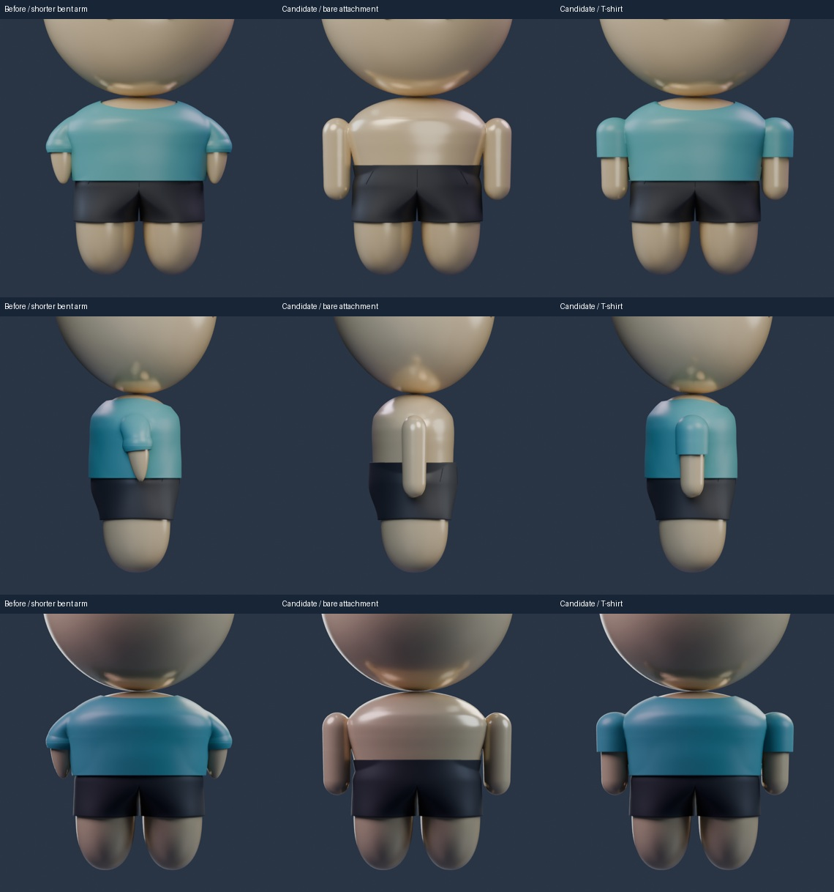
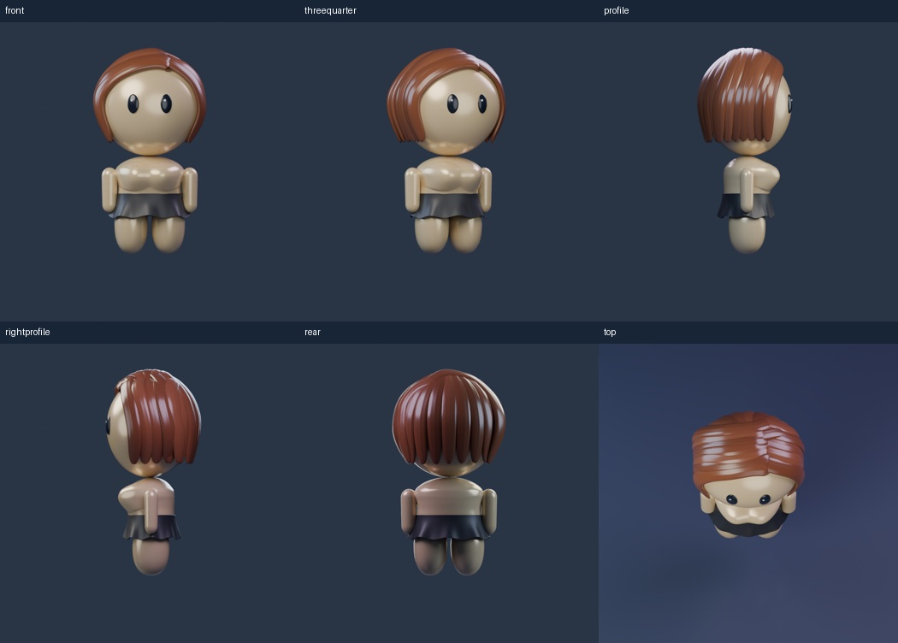
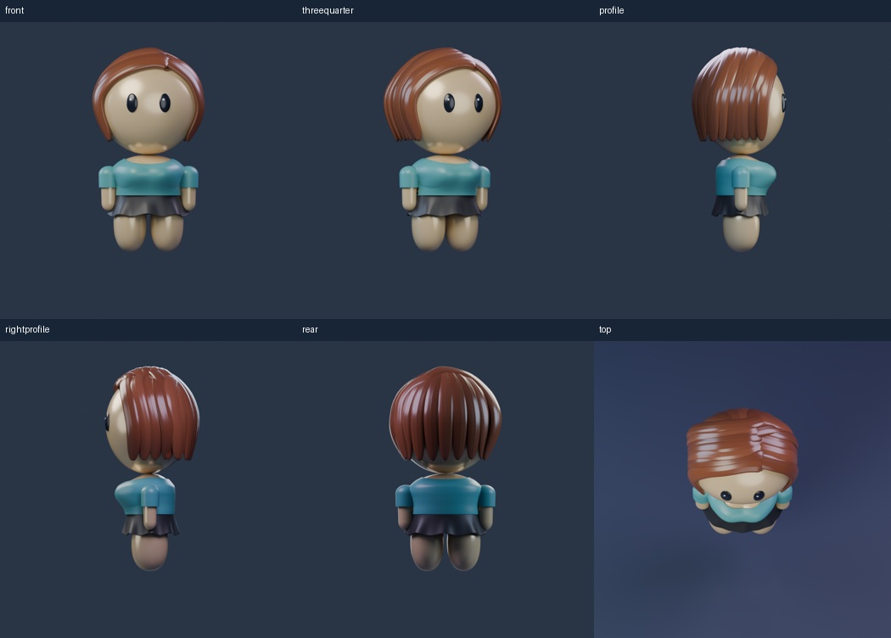
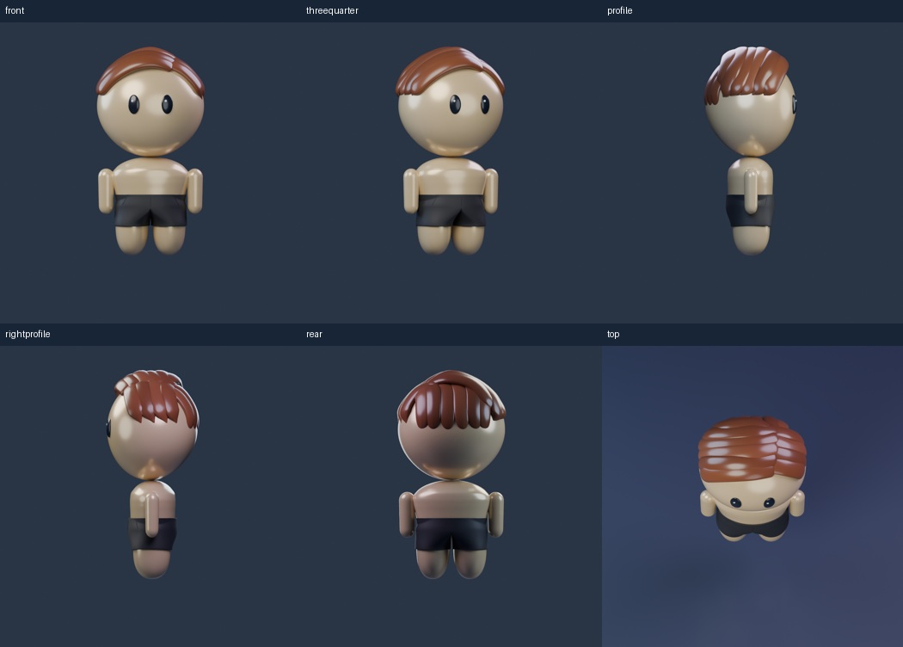
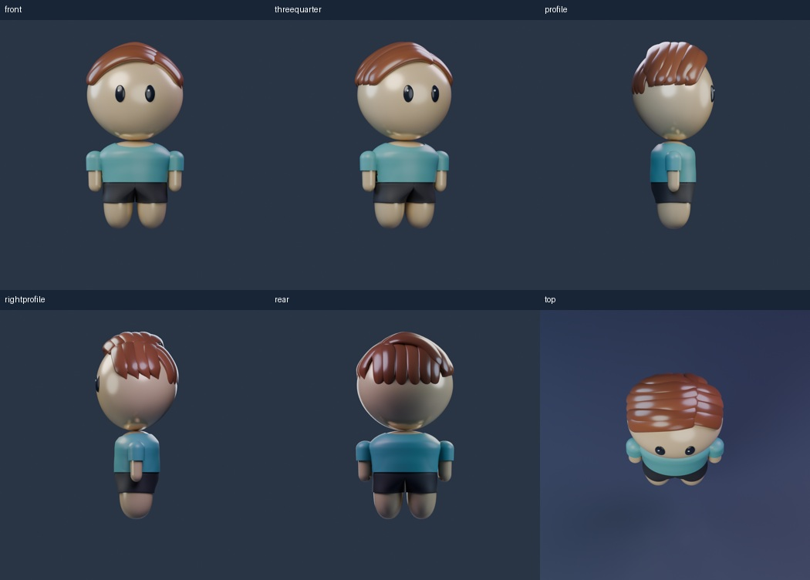

ARM STUDY · 180
Longer arms, simpler attachment
A focused prototype for both builds: medium-length rounded arms, a straighter outline and a modest join at the side. Toggle the T-shirt to inspect the bare attachment. The shorter bent arms were rejected; this is a candidate for review, before the remaining tops are refitted.

Blender render · T-shirt / Skirt / Light warmLoad 3D to mix outfits, rotate and zoom. Each build remembers its selections.
Blender renders are the material reference. Rotatable 3D uses the same geometry with approximate browser lighting. Native renders use Skirt / Shorts and Light warm skin. This study includes the corrected bottom assembly and flowing skirt; the full wardrobe is still in progress.
Feminine · before and candidate

Masculine · before and candidate

Full models · six angles




Scope and files
Accepted head, eyes, hair, palette, central chest and exposed legs are retained. New geometry is limited to side attachments, arms and representative T-shirt sleeves. Other tops still need this arm fit. Owner review pending.